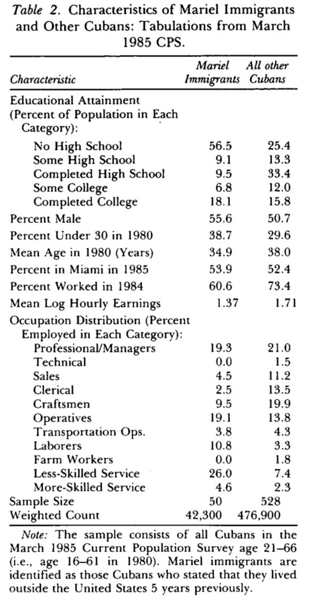
Inferencia Causal
Centro de Investigación y Docencia Económicas
Maestría en Economía
Fuente: The Miami News, 29 de abril de 1980
¿Cuál es el efecto de la inmigración en los mercados laborales?
Card (1990) empleó datos a nivel individual sobre salarios y empleo en el área metropolitana de Miami y los comparó con el promedio de otras cuatro ciudades con proporciones similares de hispanos y negros (Atlanta, Houston, Los Ángeles y Tampa)

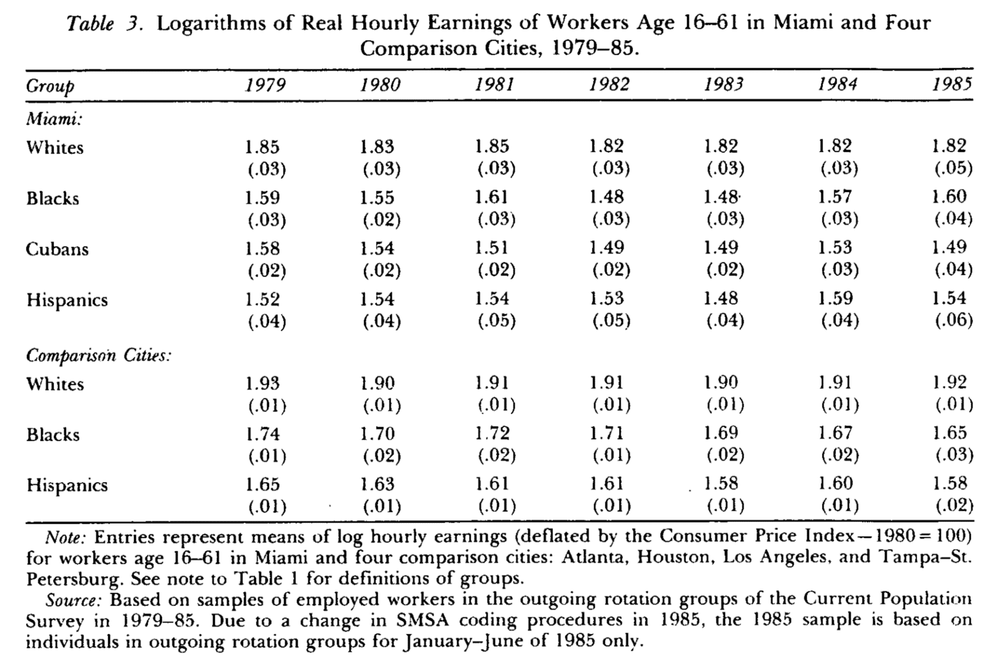
Fuente: Card (1990)
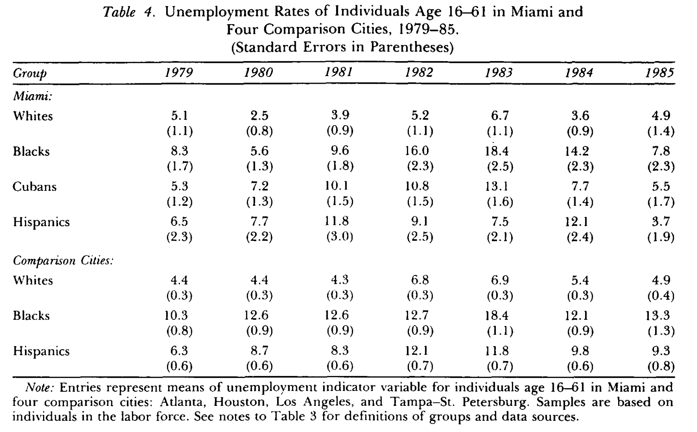
Fuente: Card (1990)
Al comparar las tendencias en empleo y salarios con las de este conjunto de ciudades Card concluye que la llegada de inmigrantes no tuvo ningún efecto negativo
Tampoco encuentra evidencia de que la distribución de ingresos de los no cubanos se hubiera hecho más desigual
Tampoco hubo efectos concentrados en los grupos menos educados
Se concluye que Miami tuvo la capacidad para absorber el choque de oferta de trabajo sin efectos en el resto del empleo
Los estudios de caso comparativos se usan cuando una política o programa se lleva a cabo a nivel agregado y afecta a unas pocas (a veces una) unidades
En otras ciencias sociales los estudios de caso comparativos regularmente se realizan mediante un análisis detallado de las condiciones institucionales, políticas e históricas de la unidad tratada
En inferencia causal, cuando empleamos DID, usamos un grupo de unidades de comparación
¿Cómo podemos saber qué tan buena es la unidad de comparación como contrafactual para reproducir lo que le hubiera pasado a la unidad tratada de no haber recibido el tratamiento?
El control sintético (CS) permite hacer estudios de caso comparativos de manera sistemática
Con las características de las unidades no tratadas se construye una unidad sintética
La unidad sintética representa la trayectoria que hubiera seguido la unidad tratada de no haber sido tratada
Podemos estimar el efecto causal al comparar la trayectoria de la unidad sintética con la trayectoria que efectivamente siguió la unidad tratada
Es un método relativamente reciente con varias extensiones y mejoras sucediendo en nuestros días
Fuente: fotograma de Scarface (De Palma, 1983)
CS ha sido empleado para estudiar el efecto de algunas políticas (o eventos):
El impacto del terrorismo en el País Vasco
El efecto de una legislación contra el tabaco en California
El efecto sobre el crecimiento de la reunificación de Alemania
El efecto del flujo masivo de inmigrantes a Miami
Tenemos \(J+1\) unidades: la unidad \(1\) es la tratada y \(\{2,\ldots,J+1\}\) son las no tratadas (el donor pool)
\(t=1,\ldots,T\) periodos, de los cuales \(1,\ldots,T_0\) son pre-intervención
La intervención afecta solo a la unidad \(1\), en los periodos \(T_0+1,\ldots,T\)
\(Y_{it}(1)\) es el resultado potencial de la unidad \(i\) en \(t\) si recibe la intervención y \(Y_{it}(0)\) es su resultado potencial sin la intervención
Asumimos que la intervención no tiene efecto antes de implementarse: \(Y_{1t}(0)=Y_{1t}(1) \quad \forall t\in\{1,\ldots,T_0\}\)
El efecto del tratamiento es:
\[\alpha_1=\left(\alpha_{1T_0+1},\ldots, \alpha_{1T}\right)\]
con \(\alpha_{1t}=Y_{1t}(1)-Y_{1t}(0)\) para \(t>T_0\)
\[Y_{it}(0)=\delta_t+\theta_t Z_i + \lambda_t\mu_i+\varepsilon_{it}\]
\(Z_i\) son variables no afectadas por la intervención
\(\theta_t\) es un vector de parámetros (que varía en el tiempo)
\(\delta_t\) son factores comunes desconocidos (efectos temporales en un modelo de panel)
\(\mu_i\) es un vector de cargas factoriales no observadas (unknown loadings)
\(\lambda_t\) son factores comunes no observables
DID ocurre cuando \(\lambda_t=\lambda\)
Considere un vector de pesos \(W=\left(w_2,\ldots,w_{J+1}\right)'\), con \(w_j \geq 0 \quad \forall j\geq 2\)
Los pesos están normalizados, \(w_2+\ldots+w_{J+1}=1\)
Cada valor de \(W\) representa un potencial CS, es decir, un promedio ponderado de las unidades no tratadas
Como los donantes nunca son tratados, \(Y_{jt}=Y_{jt}(0)\) en todo \(t\), y la variable de resultados para un CS (definido por \(W\)) es:
\[ \begin{aligned} Y_{Wt}(0)&=\sum_{j=2}^{J+1} w_j Y_{jt} \\ &=\delta_t+\theta_t \left(\sum_{j=2}^{J+1} w_j Z_j\right) + \lambda_t \left(\sum_{j=2}^{J+1} w_j \mu_j \right) + \left(\sum_{j=2}^{J+1} w_j\varepsilon_{jt} \right) \end{aligned} \]
Suponga que existe un vector de pesos \(W^*\) tal que el CS replica la unidad tratada antes de la intervención
Esto es, el control sintético replica la variable de resultados pre-intervención y las características no afectadas por la intervención
\[ \begin{aligned} &\sum_{j=2}^{J+1} w^*_j Y_{jt}=Y_{1t} \quad \forall t\in\{1,\ldots,T_0\} \\ &\sum_{j=2}^{J+1} w^*_j Z_j=Z_1 \end{aligned} \]
Abadie, Diamond y Hainmueller (2010) muestran que, si \(W^*\) reproduce la trayectoria pre-intervención y las \(Z\) de la unidad tratada, el sesgo de \(\hat{\alpha}_{1t}\) está acotado por un término que se hace pequeño cuando el número de periodos pre-intervención \(T_0\) es grande en relación con la escala de los choques transitorios \(\varepsilon_{it}\)
La intuición es que con muchos periodos pre-intervención, ajustar bien la trayectoria solo es posible si el CS también reproduce los factores no observados \(\mu_1\), y no por azar en los choques
\[\hat{\alpha}_{1t}=Y_{1t}-\sum_{j=2}^{J+1} w^*_j Y_{jt}=Y_{1t}-Y_{W^*t}(0)\] para \(t\in \{T_0+1,\ldots,T\}\)
Necesitamos datos de panel pre y post intervención para la variable dependiente
Necesitamos algunos puntos pre-intervención para las variables \(Z\)
Requerimos suficientes periodos pre-intervención para asegurarnos de que el CS replica bien a la unidad tratada antes de la intervención
¿Cómo escogemos los pesos \(W\)?
Definamos \(X_1=(Z_1',\tilde{Y}_1^{K_1},\ldots,\tilde{Y}_1^{K_M})'\) el vector que colecciona las características de la unidad tratada pre-intervención
En el vector \(X_1\) permitimos que haya \(M\) combinaciones lineales de la variable de resultados pre-intervención
Una combinación lineal de la variable de resultados pre-intervención es
\[\tilde{Y}_i^K=\sum_{s=1}^{T_0}k_sY_{is},\quad\quad K=(k_1,\ldots,k_{T_0})'\]
Por ejemplo, podemos incluir el valor de la variable de resultados en algunos años pre-intervención o el promedio de todos los años pre-intervención
Tenemos lo mismo, pero para las unidades no tratadas, en la matriz \(X_0\)
Definimos \(X_1-X_0W\) como una medida de discrepancia entre \(X_1\) y \(X_0W\)
\[\min_{W\in\mathcal{W}}\;(X_1-X_0W)'V(X_1-X_0W)\] donde \(\mathcal{W}\) es el conjunto de vectores con \(w_j\geq0\) y \(\sum_j w_j=1\), y \(V\) es una matriz simétrica y positiva semidefinida (en la aplicación, diagonal y positiva definida)
\(V\) es de dimensión \((k\times k)\), con \(r\) siendo el número de convariables en \(Z\)
La solución a este problema, \(W^*(V)\) depende de \(V\)
\(V\) es una matriz de pesos que refleja la importancia relativa de las variables en \(X_1\) y \(X_0\)
Siguiendo a Abadie y Gardeazabal (2003), podemos realizar un proceso que minimice la distancia entre el valor observado de la variable de resultados y el contrafactual definido por \(W^*(V)\)
Definamos \(\mathcal{Y}_1\) como el vector de variables de resultados en la unidad tratada para los periodos pre-intervención y \(\mathcal{Y}_0\) a la matriz de las mismas variables para los no tratados
Entonces, podemos encontrar la \(V\) óptima como
\[V^*=\arg\min_{V\in\mathcal{V}}(\mathcal{Y}_1-\mathcal{Y}_0W^*(V))'(\mathcal{Y}_1-\mathcal{Y}_0W^*(V))\]
Envolvente convexa: las características pre-intervención de la unidad tratada deben poder reproducirse con un promedio ponderado de los donantes
Sesgo de interpolación: aun con buen ajuste, promediar unidades muy distintas puede sesgar si la relación no es lineal
Suficientes periodos pre-intervención: con \(T_0\) pequeño, un buen ajuste puede deberse al ruido (sobreajuste) y no a reproducir \(\mu_1\)
Suficientes periodos post-intervención: si el efecto tarda en aparecer, requerimos suficientes periodos para distinguir el efecto respecto a la volatilidad del resultado
En 1988 se pusieron en marcha una serie de medidas en el estado de California para tratar de reducir el consumo de tabaco
Las medidas incluyeron nuevos impuestos, campañas publicitarias, establecimiento de espacios libres de humo, etc.
Para conocer el impacto de la medida en el consumo per cápita, Abadie, Diamond y Hainmueller (2010) construyen un CS
¿Qué pasaría si comparamos California con el resto de los estados de EUA?
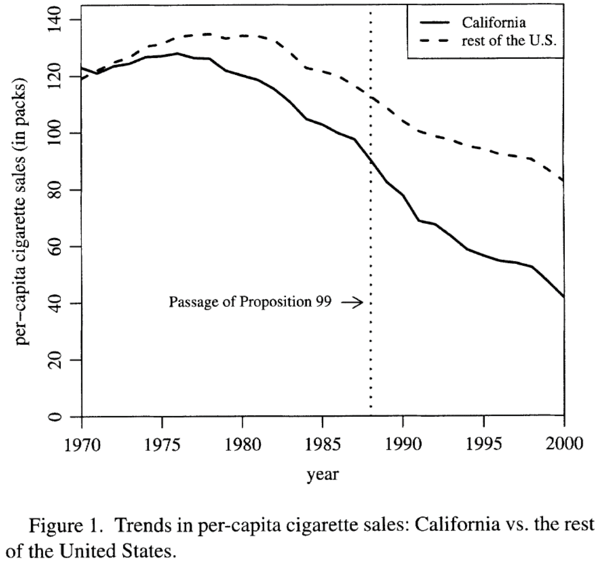
Comparar a California con el resto de los estados no es lo más apropiado
El consumo de tabaco ya venía cayendo en todo el país, pero en California la tendencia era más pronunciada
La implementación del CS consiste en escoger a los estados no tratados de forma que puedan reproducir el comportamiento de California antes de la Proposición 99
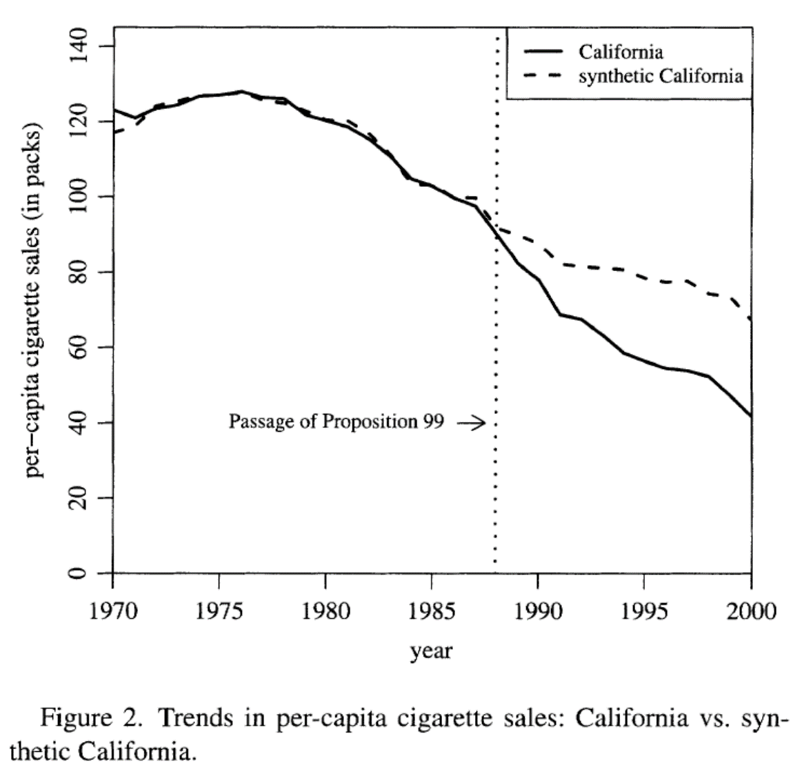
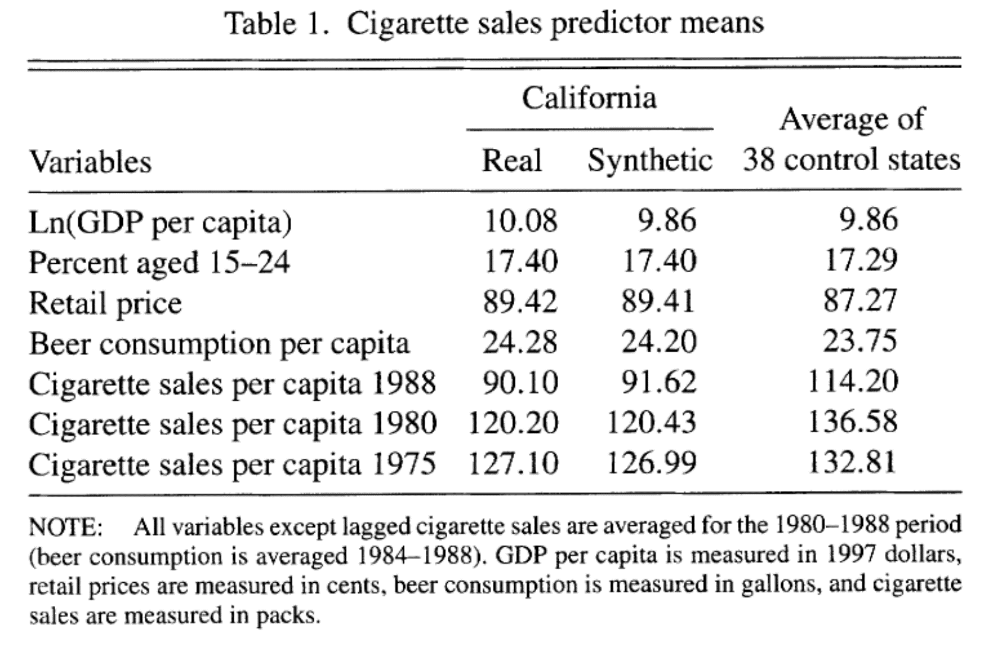
El control sintético se caracteriza por un vector de pesos
Muchas unidades no contribuyen a la construcción del contrafactual
Tenemos un método que nos permite asignar estos pesos de manera sistemática y dando más peso a los estados más parecidos a California
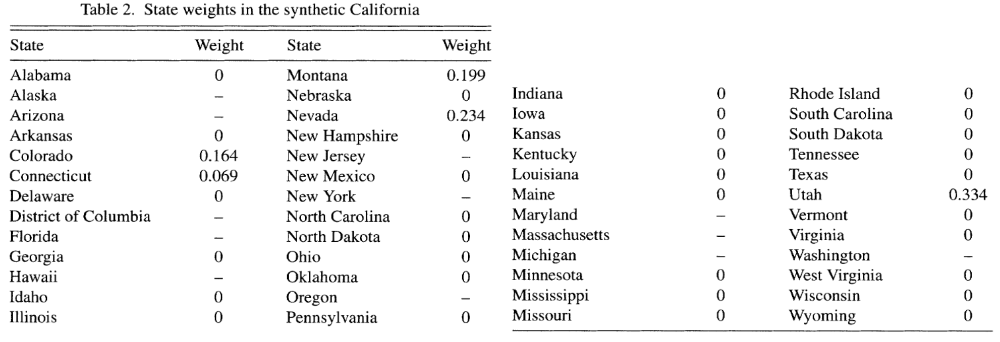
Fuente: Abadie, Diamond y Hainmueller (2010)
El efecto del tratamiento está dado por la diferencia entre el consumo per cápita de cigarrillos en California y el del CS
Esto es la distancia vertical entre las curvas
Al graficar las diferencias obtenemos una gráfica más clara del efecto del tratamiento
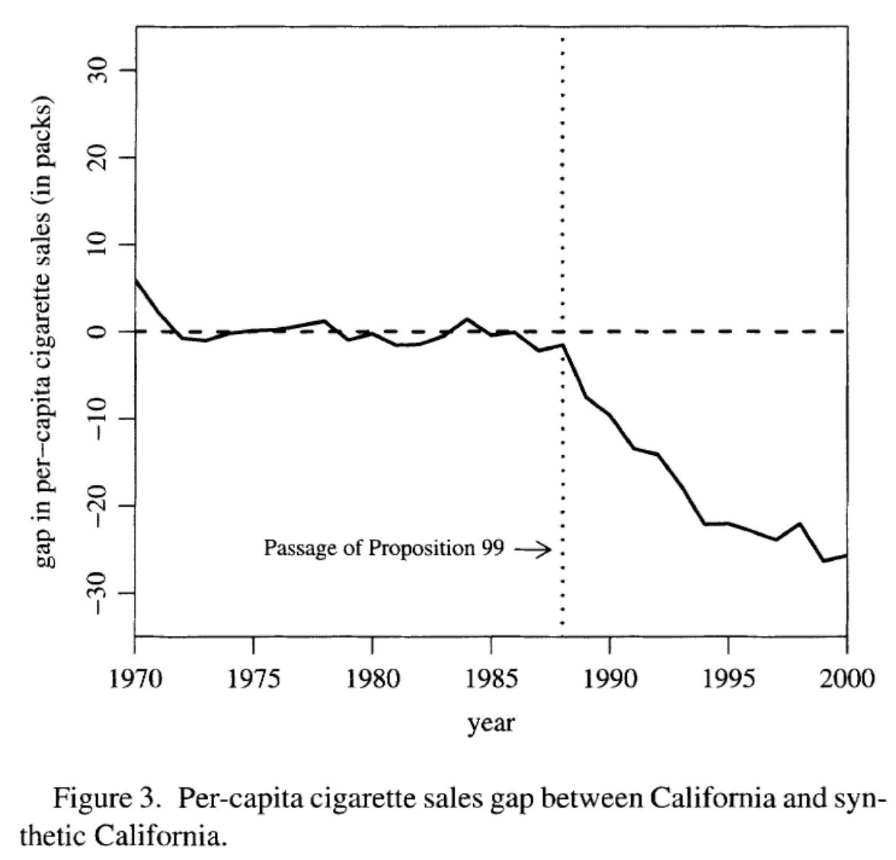
A diferencia de las técnicas basadas en regresión, aquí no tenemos errores estándar para hacer inferencia sobre si las diferencias son estadísticamente significativas
Se propone hacer inferencia basada en placebos
Para cada estado podemos estimar su CS
Es una prueba placebo porque sabemos que para los demás estados no pasó una ley similar a la Proposición 99
Para cada placebo obtenemos una gráfica del efecto del tratamiento como la anterior, aunque sabemos que este efecto debería ser cercano a cero
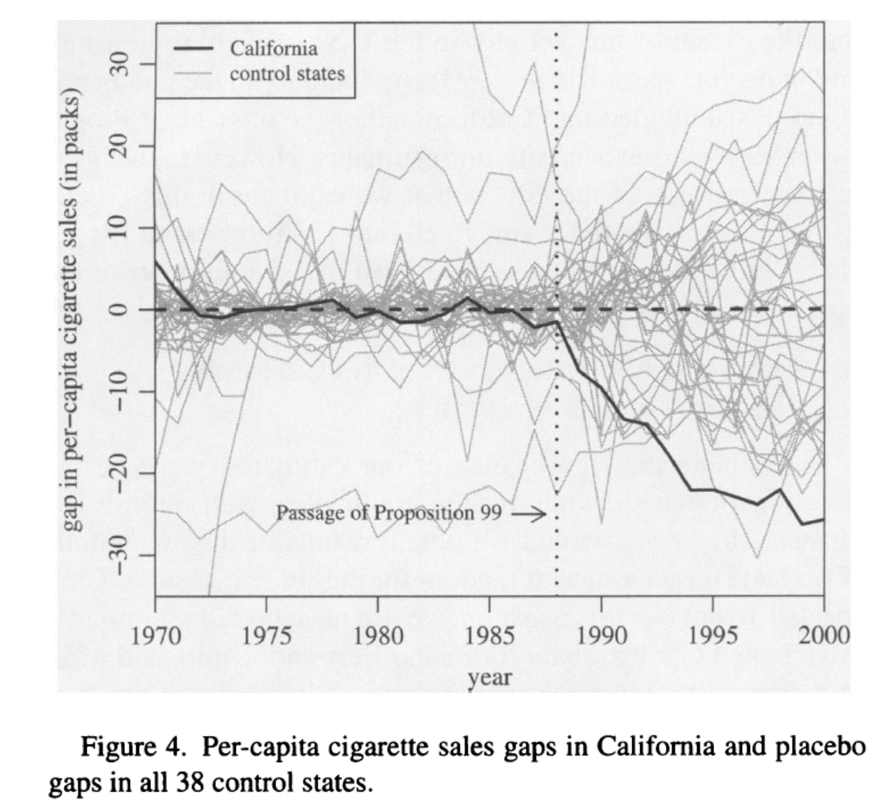
Medida del ajuste del CS estimado
Promedio de las discrepancias cuadradas entre la unidad verdadera y su CS
\[r_{j}^{MSPE}=\frac{MSPE_{post}}{MSPE_{pre}}=\frac{\frac{1}{T-T_0}\sum_{t>T_0}\left(Y_{jt}-\hat{Y}_{jt}(0)\right)^2}{\frac{1}{T_0}\sum_{t\leq T_0}\left(Y_{jt}-\hat{Y}_{jt}(0)\right)^2}\]
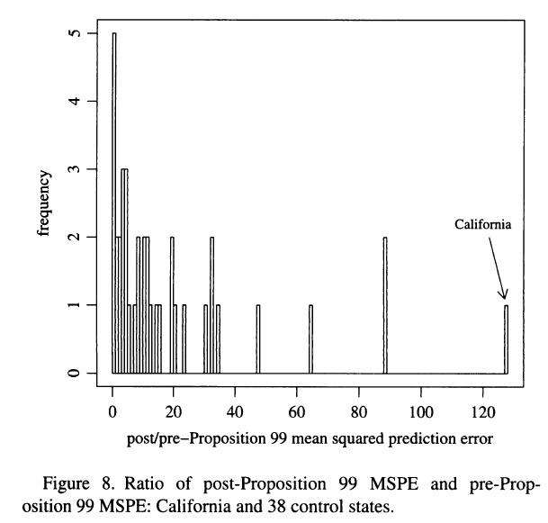
Para cada unidad \(j\), estimamos su CS y su \(r_j^{MSPE}\)
Obtenemos un valor \(p\) definido como la proporción de unidades con un ratio al menos tan grande como el de la unidad tratada
\[p=\frac{1}{J+1}\sum_{j=1}^{J+1}\mathbb{1}\left\{r_j^{MSPE}\geq r_1^{MSPE}\right\}\]
Es la probabilidad de un efecto así de grande si la intervención se asignara al azar entre los estados
Placebos con mal ajuste no son informativos, por lo que se sugiere eliminar los CS placebo con un MSPE grande
Placebos en el tiempo: se impone la intervención antes de \(T_0\) y no se espera encontrar ningún efecto
Dejar uno fuera: se quita cada donante con peso positivo; el resultado no debe depender de uno solo
En 1989 cae el muro de Berlín
Alemania comienza una transición para convertirse en una sola nación
¿Cuál es el efecto de este evento político en la economía de Alemania Occidental?
Abadie, Diamond y Hainmueller (2015) construyen una Alemania sintética a partir de pesos asignados a Austria, Japón, Holanda, Suiza y Estados Unidos
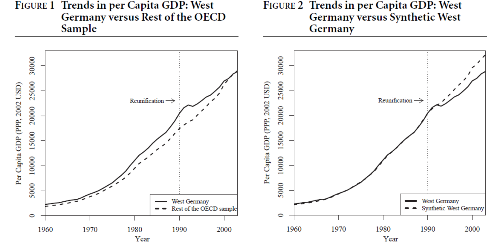
Fuente: Abadie, Diamond y Hainmueller (2015)
Desde finales de los 60 ETA comenzó una serie de ataques terroristas
El propósito de ETA era promover la independencia del Estado vasco
Usando características económicas de otras regiones de España se construye un CS
Tras el inicio del terrorismo, el PIB per cápita del País Vasco cae alrededor de 10 puntos porcentuales respecto a su CS
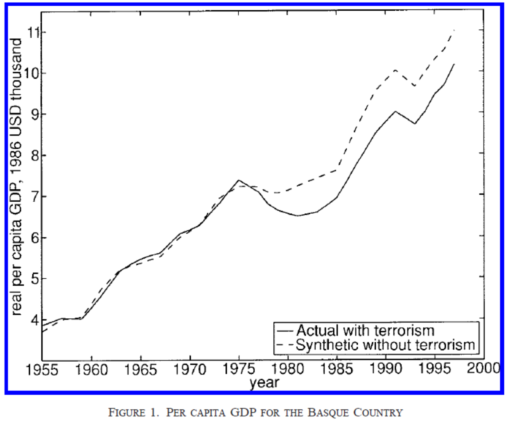
En medio de la crisis financiera de 2008 el entonces presidente electo Barack Obama nominó a Tim Geithner como Secretario del Tesoro
Justo después de su nombramiento, los rendimientos de muchas empresas en las bolsas mostraron una repentina tendencia al alza
Semanas después de haberse anunciado, se rumoró que un problema de impuestos podría impedirle a Geithner tomar el cargo, produciéndose el efecto contrario en el valor de las acciones
Acemoglu et al. (2016) estudian si existe una relación entre las empresas conectadas con Geithner y los precios de las acciones
Los autores identifican las empresas conectadas con Geithner
De 603 empresas financieras en la muestra, los autores identifican 63 con algún tipo de conexión con Geithner
Esto permite construir una unidad sintética para cada una de las unidades tratadas a partir del grupo de donantes
La idea es repetir lo que hemos visto en los ejemplos anteriores pero tantas veces como unidades tratadas existan
Para cada tratado se calculan los rendimientos anormales como la diferencia entre los rendimientos verdaderos y los rendimientos de la unidad sintética
Se promedian los rendimientos anormales
\[\hat{\phi}(\tau,k)=\frac{\sum_{i\in \text{tratados}} \frac{\sum^{k}_{t=0} (R_{it}-\hat{R}_{it})}{\hat{\sigma}_i}}{\sum_{i\in \text{tratados}} \frac{1}{\hat{\sigma}_i}}\]
con \(\hat{\sigma}_i=\sqrt{\frac{1}{T_0}\sum_{t=1}^{T_0}\left(R_{it}-\hat{R}_{it}\right)^2}\)
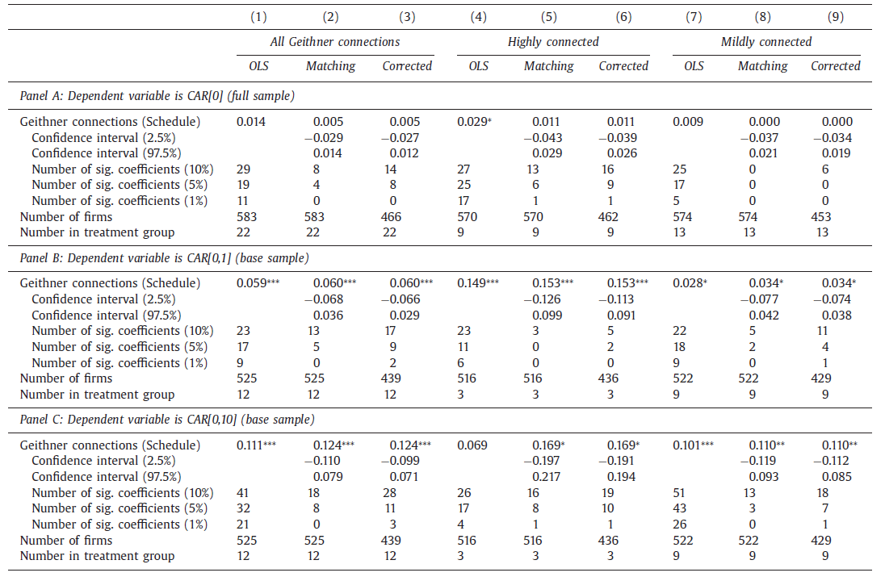
Se obtienen 5 mil remuestreos de grupos de tratamiento placebo del mismo tamaño que el grupo tratado
Se calculan los rendimientos anormales en cada muestra placebo
El efecto estimado es significativo al 5% si no pertenece al intervalo que contiene los percentiles \([2.5, 97.5]\) de los efectos placebo
Arkhangelsky et al. (2021) combinan las ideas de DID y del CS
Se estiman pesos para las unidades de control, \(\hat\omega_i\), como en el CS, y pesos para los periodos pre-intervención, \(\hat\lambda_t\), que dan más importancia a los periodos parecidos a los posteriores
El efecto se obtiene con una regresión de efectos fijos de dos vías ponderada:
\[\left(\hat{\tau},\hat{\mu},\hat{\alpha},\hat{\beta}\right)=\arg\min_{\tau,\mu,\alpha,\beta}\sum_{i=1}^{N}\sum_{t=1}^{T}\left(Y_{it}-\mu-\alpha_i-\beta_t-D_{it}\tau\right)^2\hat{\omega}_i\hat{\lambda}_t\]
Con pesos uniformes es DID; sin efectos fijos de unidad ni pesos de tiempo, es (casi) el CS
A diferencia del CS:
Si el ajuste pre-intervención no es bueno, el CS puede estar sesgado, y en la práctica el ajuste casi nunca es perfecto
Ben-Michael, Feller y Rothstein (2021) corrigen el sesgo con un modelo de resultados \(\hat{m}_t(\cdot)\), por ejemplo, una regresión ridge de los resultados post en los pre, estimada con los donantes:
\[\hat{Y}_{1t}^{aug}(0)=\sum_{j=2}^{J+1} \hat{w}_j Y_{jt}+\left(\hat{m}_t(X_1)-\sum_{j=2}^{J+1} \hat{w}_j\, \hat{m}_t(X_j)\right)\]
El término entre paréntesis estima el sesgo debido al desbalance que deja el CS
Es la misma lógica que la corrección de sesgo en matching y que los métodos doblemente robustos
El costo: los pesos implícitos pueden ser negativos, es decir, hay algo de extrapolación, pero controlada por la penalización
Cuando hay muchos donantes (o muchas unidades tratadas, con datos desagregados), la solución del CS puede no ser única y puede promediar unidades muy distintas a la tratada
Abadie y L’Hour (2021) agregan una penalización por la distancia entre la unidad tratada y cada donante que recibe peso:
\[\min_{W\in\mathcal{W}}\;\left\|X_1-\sum_{j=2}^{J+1}w_jX_j\right\|^2+\lambda\sum_{j=2}^{J+1}w_j\left\|X_1-X_j\right\|^2\]
Con \(\lambda\to0\) se obtiene el CS; con \(\lambda\to\infty\), matching con el vecino más cercano
Para \(\lambda>0\) la solución es única y rala (pocos donantes con peso positivo), y se reduce el sesgo de interpolación
\(\lambda\) se escoge con validación cruzada, por ejemplo, con los periodos pre-intervención
En la práctica, \(X_1\) y \(X_0\) mezclan covariables \(Z\) y resultados pre-intervención, y los resultados pueden cambiar según qué predictores se incluyan
Kaul et al. (2022): si se incluyen todos los resultados pre-intervención como predictores, las covariables reciben peso cero en \(V^*\) y se vuelven irrelevantes
Botosaru y Ferman (2019): la cota del sesgo de ADH supone balance perfecto en covariables y en resultados pre
Recomendación: decidir la especificación antes de ver los resultados post y reportar la robustez a especificaciones alternativas
Usamos el estudio de Card (1990) sobre el impacto de los marieles en la economía de Miami
Criticamos la selección del grupo de comparación
Peri y Yasenov (2019) construyen un Miami sintético para estimar el efecto de los marieles
Muestran que las conclusiones de Card en general se sostienen, aunque Borjas (2017) encuentra que, con otra muestra, sí se encuentran caídas salariales
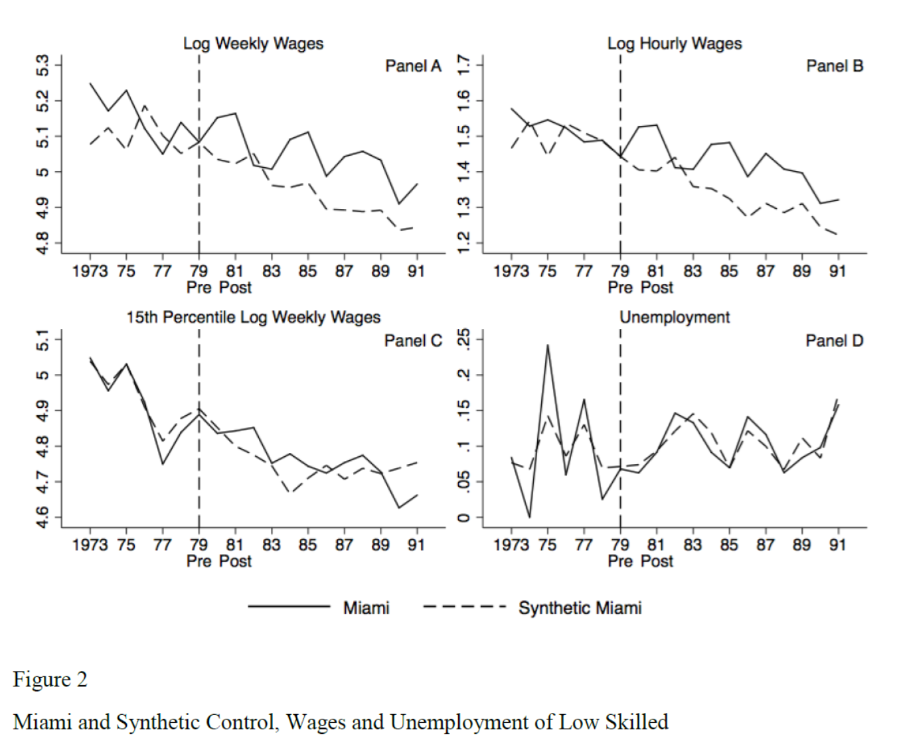
La construcción del CS se basa en lo que dicen los datos (data driven) para la selección de las unidades que son usadas y los pesos
El investigador debe ser transparente al mostrar qué tan bueno es el CS que construye
Para construir el CS no se usan los datos post-intervención por lo que, al menos en teoría, el investigador no debería seleccionar el CS guiado por las conclusiones que resultan
Inferencia Causal
CIDE · Maestría en Economía
© 2026 Irvin Rojas. Distribuido bajo licencia Creative Commons CC BY-NC-SA 4.0. Los materiales de terceros citados conservan sus propios derechos.
Inferencia Causal · Control sintético